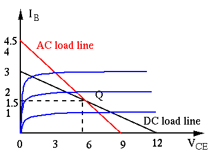

Next: Emitter Follower Up: ch4 Previous: Small-Signal Model and H
As discussed before, the voltage a circuit receives from a source
depends on its input impedance  as well as the internal
impedance
as well as the internal
impedance  of the source, while the voltage it delivers depends
on its output impedance
of the source, while the voltage it delivers depends
on its output impedance  as well as the load impedance
as well as the load impedance  .
It is therefore important to consider these input and output impedances
of an amplification circuit as well as its voltage gain.
.
It is therefore important to consider these input and output impedances
of an amplification circuit as well as its voltage gain.
In the first figure, everything inside the red box, including the
amplifier as well as  and , is treated as the source, while
everything inside the blue box, including the amplifier as well as ,
is treated as the load. Given the amplifier as well as the source
and , and the load , we need to find the following three
parameters so that the red and blue boxes in the first figure can be
modeled by the corresponding boxes in the second figure:
and , is treated as the source, while
everything inside the blue box, including the amplifier as well as ,
is treated as the load. Given the amplifier as well as the source
and , and the load , we need to find the following three
parameters so that the red and blue boxes in the first figure can be
modeled by the corresponding boxes in the second figure:


Consider the typical transistor AC amplification circuit below:

If the capacitances of the coupling capacitors and the emitter by-pass
capacitor are large enough with respect to the frequency of the AC signal
in the circuit is high enough, these capacitors can all be approximated as
short circuit. Moreover, note that the AC voltage of the voltage supply
 is zero, it can be treated the same as the ground. Now the AC
behavior of the transistor amplification circuit can be modeled by the
following small signal equivalent circuit:
is zero, it can be treated the same as the ground. Now the AC
behavior of the transistor amplification circuit can be modeled by the
following small signal equivalent circuit:
As shown above, this AC small signal equivalent circuit can be modeled by as an active circuit containing three components:
For AC signals, the input of the amplification circuit is shown below,
where is the internal resistance of the signal source, and the
input impedance of the circuit is the three resistances  ,
,  and
and
 in parallel:
in parallel:
| (66) |
This is simply the resistance of the resistor .
Given the AC input voltage  , the base voltage and current are
, the base voltage and current are
| (67) |
| (68) |
 is
is  out of
phase with .
The voltage gain is:
out of
phase with .
The voltage gain is:
| (69) |
| (70) |
| (71) |
, we want to have smaller and
greater . However, this also means the input resistance
is small and the output resistance
is large, neither is desirable.
Note that is not constant. As shown
before,
of the base-emitter PN-junction is
approximately inversely proportional to  .
.
Also note that and affects the DC operating point.
Distortion may be caused if or is set properly.
Example 1:
 ,
,
, and
,
,
, and  .
We further assume , and the capacitances are large enough so
that they can be considered as short circuit for AC signals.
.
We further assume , and the capacitances are large enough so
that they can be considered as short circuit for AC signals.
| (72) |
 |
|||
| (73) |
 :
:
| (74) |
The AC load is
. The AC load line is a
straight line passing the DC operating point with slope
.
The intersections of the AC load line with  and
and  axes can
be found by
axes can
be found by
| (75) |
| (76) |
Assume AC input voltage is and , the overall base voltage is
| (77) |
| (78) |
| (79) |
The output current is
| (80) |
| (81) |
| (82) |

The circuit above can also be analyzed using the small-signal model.
Same as before,
, and we have the following DC variables:
 |
 |
||
 |
|
||
 |
|
(83) |
| (84) |
| (85) |
Example 2:
Consider the circuit below with its AC small-signal model:


We can find the voltage gain, the input and output resistances when
and
 (
).
(
).
Apply KVL to the collector to get
| (86) |
| (87) |
and then find the AC voltage gain:
 |
|
||
|
(88) |
The input resistance is the parallel combination of and
, the resistence of the circuit to the right of the base.
First, we realize that
, and convert the
current source in parallel with to a voltage source
in series with , and then get the current into the
circuit as:
| (89) |
| (90) |
| (91) |
is simply
| (92) |
 :
Short-circuit current by alone is
:
Short-circuit current by alone is
 ,
Short-circuit current by current source alone is
. The total short-circuit current is
,
Short-circuit current by current source alone is
. The total short-circuit current is
| (93) |
 |
|
||
 |
(94) |
Example 3:
Consider both the DC operating point and its AC small signal model of the circuit below:
Apply KVL to get
| (95) |
| (96) |
| (97) |
| (98) |
 |
(99) |
| (100) |
| (101) |
Next consider the AC equivalent circuit based on small-signal model of the transistor in the dashed line box:
As is significantly greater than all resistors in the circuit, it can be ignored in the AC analysis. Apply KCL to the emitter to get
| (102) |
 :
:
| (103) |
| (104) |
 |
(105) |
):
):
| (106) |
 increases the
input resistance, and stabalizes the DC operating point as well as the
AC voltage gain.
increases the
input resistance, and stabalizes the DC operating point as well as the
AC voltage gain.